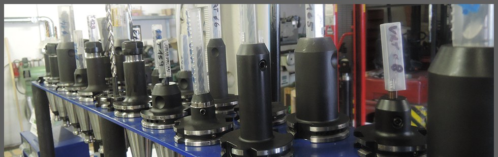
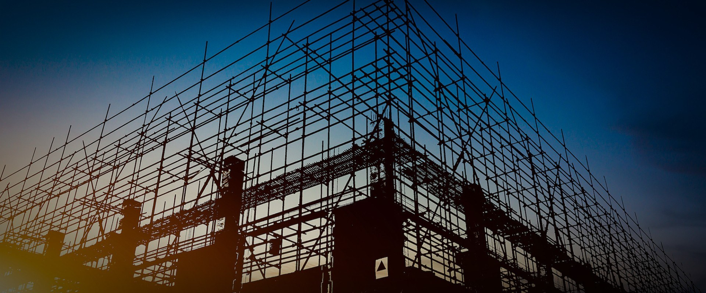
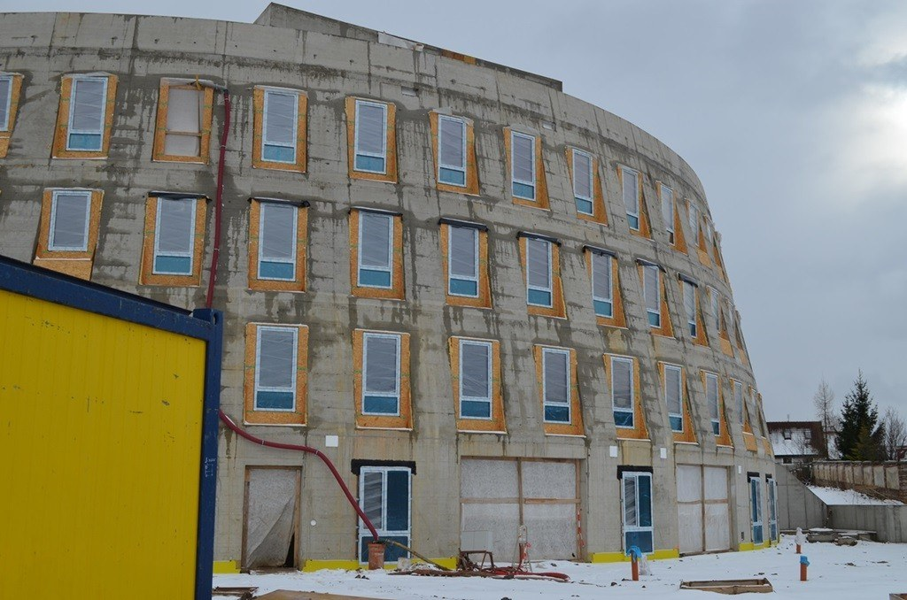
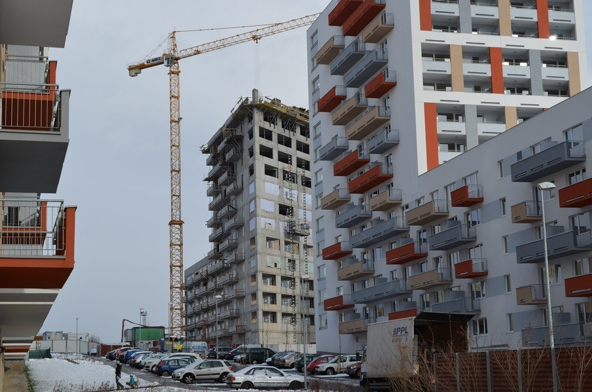
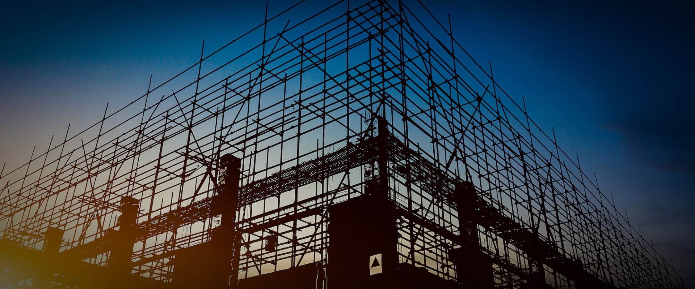
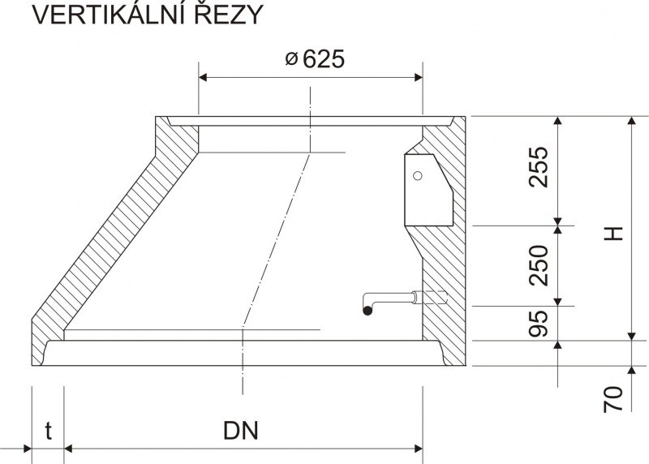
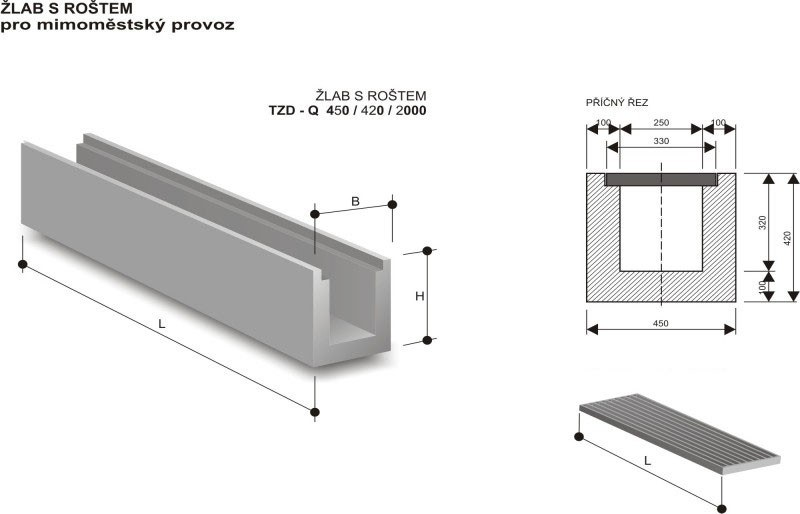

Sanace zdiva
ČSN P 73 0610 / WTA
Silan-siloxanová krémová injektáž zdiva
Vytvoření dodatečné hydrofobní clony proti vzlínající vlhkosti bez narušení statiky zdiva.
Social Group s.r.o. poskytuje komplexní inženýrská řešení v oblasti sanace vlhkého zdiva, hloubkové hydroizolace základů, průmyslových podlah a statického zajištění objektů dle norem WTA a ČSN.
Aplikujeme certifikované krémové silan-siloxanové injektáže, mechanické podřezávání zdiva diamantovým lanem s vkládáním PE fólií a sanační omítkové systémy WTA s vysokou kapacitou pro ukládání škodlivých solí.

Realizujeme bezešvé dvousložkové bitumen-polymerové stěrky KMB a hloubkovou krystalizační hydroizolaci monolitického betonu odolávající tlaku vody až 14 bar s aktivním samohojením mikrotrhlin.

Monolitické lité stěrky a vsypové podlahy s korundovým a křemičitým plnivem pro výrobní prostory, logistické areály a komerční provozy s extrémní odolností proti mechanickému obrusu a chemikáliím.

Šetrné strukturální sešívání trhlin zdiva nerezovou helikální výztuží AISI 304/316 a dodatečné zesilování železobetonových nosníků a stropních desek lepenými uhlíkovými kompozity CFRP.

Let specializace na trhu
Realizovaných sanací a izolací
Úspěšnost hydrofobních clon
Technologické divize
Vyberte technologii pro zobrazení technických parametrů, použitých materiálů a souvisejících norem.
Vytvoření dodatečné hydrofobní clony proti vzlínající vlhkosti bez narušení statiky zdiva.
Nejúčinnější přímé vložení nové celistvé hydroizolační fólie s PE deskami do proříznuté spáry.

Sanace zdivaParopropustný vícevrstvý omítkový systém pro ukládání solí a odpařování vlhkosti bez výkvětů.
Dvousložková bitumen-polymerová bezešvá stěrka odolná proti tlakové vodě a radonu.

HydroizolaceChemicky reaktivní systém vytvářející nerozpustné krystaly v kapilárách a pórech betonu.
Monolitické podlahové systémy s vysokou mechanickou a chemickou odolností pro výrobní haly a sklady.
Šetrné strukturální sešívání popraskaných stěn a kleneb pomocí austenitické nerezové oceli.

Statika & sanaceDodatečné statické zesílení betonových průvlaků, nosníků a stropních desek kompozity z uhlíkových vláken.
Social Group s.r.o. působí na českém stavebním trhu nepřetržitě od roku 2013 se sídlem ve Vyškově. Naším zaměřením jsou náročné inženýrské zásahy – sanace vlhkostí poškozených staveb, realizace tlakových hydroizolací pod úrovní terénu, průmyslové lité podlahy a statické zpevňování nosných konstrukcí.
Veškeré technologické postupy navrhujeme a realizujeme striktně podle platných evropských norem ČSN EN a německých sanačních směrnic WTA. Za každým projektem stojí osobní dohled a autorizace jednatele Ing. Tomáše Gregůrka.
Jednatel společnosti
Kontaktujte přímo vedení společnosti nebo vyplňte formulář níže pro nezávazné posouzení vašeho objektu.